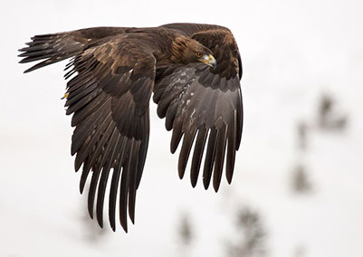

Les Oiseaux
L’aigle royal
Voie de migration: L’aigle royal se reproduit presque partout au Canada, mais on l’observe principalement dans l’ouest du pays, dans l’ouest des États-Unis et au nord du Mexique. L’hiver, les populations du sud de l’Alaska et du Canada migrent vers le Mexique, la côte du golfe du Mexique et la Floride.
Les bernaches
Voie de migration: Les bernaches empruntent l’une des quatre voies migratoires de l’Amérique du Nord en direction de leurs sites de nidification d’été au Canada et au nord des États-Unis. Afin de conserver leur énergie, elles adoptent une formation de vol en « V » ou en longue ligne courbe et se remplacent à tour de rôle à l’avant de la formation.
Fait intéressant:C’est l’espèce de bernaches la plus grosse et la plus répandue en Amérique du Nord.
Fait intéressant: L’aigle royal est l’une des trois seules espèces de rapaces qui vivent en Amérique du Nord dont les pattes sont couvertes de plumes jusqu’aux doigts. la suite